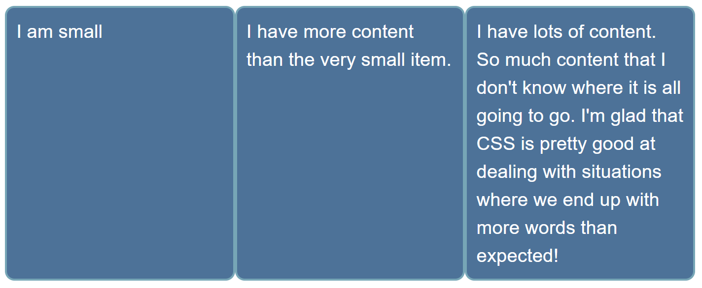

The aim of this task is to get you working with Flexbox and demonstrate your understanding of how flex items behave. Below are four common design patterns which you might use Flexbox to create, your task is to build them.
Note: You can try out solutions in the interactive editors below, however it may be helpful to download the code and use an online tool such as CodePen, jsFiddle, or Glitch to work on the tasks.
If you get stuck, then ask us for help — see the {{anch("Assessment or further help")}} section at the bottom of this page.
These list items are the navigation for a site. They should be laid out as a row, with an equal amount of space between each item. The finished example should look like the image below.
Try updating the live code below to recreate the finished example:
{{EmbedGHLiveSample("css-examples/learn/tasks/flexbox/flexbox1.html", '100%', 700)}}
For assessment or further work purposes, download the starting point for this task to work in your own editor or in an online editor.
These list items are all different sizes, but we want them to be displayed as three equal sized columns, no matter what content is in each item.

Try updating the live code below to recreate the finished example:
{{EmbedGHLiveSample("css-examples/learn/tasks/flexbox/flexbox2.html", '100%', 800)}}
Additional questions:
For assessment or further work purposes, download the starting point for this task to work in your own editor or in an online editor.
There are two elements in the HTML below, a div with a class of .parent which contains another div with a class of .child. Use Flexbox to center the child inside the parent.

Try updating the live code below to recreate the finished example:
{{EmbedGHLiveSample("css-examples/learn/tasks/flexbox/flexbox3.html", '100%', 800)}}
For assessment or further work purposes, download the starting point for this task to work in your own editor or in an online editor.
In this final task arrange these items into rows as in the image.

Try updating the live code below to recreate the finished example:
{{EmbedGHLiveSample("css-examples/learn/tasks/flexbox/flexbox4.html", '100%', 800)}}
For assessment or further work purposes, download the starting point for this task to work in your own editor or in an online editor.
You can practice these examples in the Interactive Editors mentioned above.
If you would like your work assessed, or are stuck and want to ask for help: